Chapter 14: DNA Structure and Function¶
Introduction¶
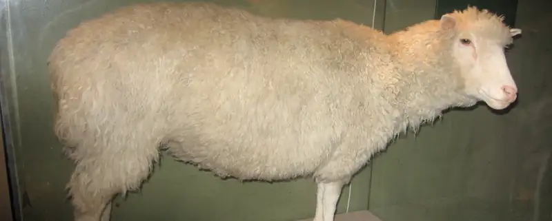
The three letters “DNA” have now become synonymous with crime solving and genetic testing. DNA can be retrieved from hair, blood, or saliva. Each person’s DNA is unique, and it is possible to detect differences between individuals within a species on the basis of these unique features.
DNA analysis has many practical applications beyond forensics. In humans, DNA testing is applied to numerous uses: determining paternity, tracing genealogy, identifying pathogens, archeological research, tracing disease outbreaks, and studying human migration patterns. In the medical field, DNA is used in diagnostics, new vaccine development, and cancer therapy. It is now possible to determine predisposition to diseases by looking at genes.
Each human cell has 23 pairs of chromosomes: one set of chromosomes is inherited from the female parent and the other set is inherited from the male parent. There is also a mitochondrial genome, inherited exclusively from the female parent, which can be involved in inherited genetic disorders. On each chromosome, there are thousands of genes that are responsible for determining the genotype and phenotype of the individual. A gene is defined as a sequence of DNA that codes for a functional product. The human haploid genome contains 3 billion base pairs and has between 20,000 and 25,000 functional genes.
14.1 Historical Basis of Modern Understanding¶
Learning Objectives
By the end of this section, you will be able to do the following:
- Explain transformation of DNA
- Describe the key experiments that helped identify that DNA is the genetic material
- State and explain Chargaff’s rules
Our current understanding of DNA began with the discovery of nucleic acids followed by the development of the double-helix model. In the 1860s, Friedrich Miescher (Figure 14.2), a physician by profession, isolated phosphate-rich chemicals from white blood cells (leukocytes). He named these chemicals (which would eventually be known as DNA) nuclein because they were isolated from the nuclei of the cells.
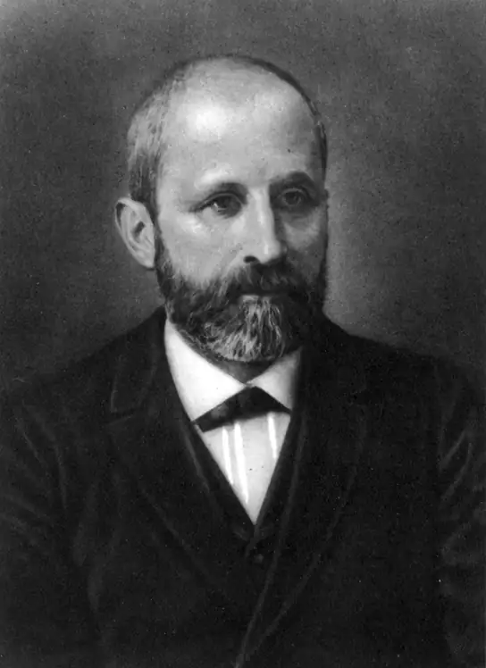
Interactive
To see Miescher conduct his experiment that led to his discovery of DNA and associated proteins in the nucleus, click through this review.
A half century later, in 1928, British bacteriologist Frederick Griffith reported the first demonstration of bacterial transformation—a process in which external DNA is taken up by a cell, thereby changing its morphology and physiology. Griffith conducted his experiments with Streptococcus pneumoniae, a bacterium that causes pneumonia. Griffith worked with two strains of this bacterium called rough (R) and smooth (S). (The two cell types were called “rough” and “smooth” after the appearance of their colonies grown on a nutrient agar plate.)
The R strain is non-pathogenic (does not cause disease). The S strain is pathogenic (disease-causing), and has a capsule outside its cell wall. The capsule allows the cell to escape the immune responses of the host mouse.
When Griffith injected the living S strain into mice, they died from pneumonia. In contrast, when Griffith injected the live R strain into mice, they survived. In another experiment, when he injected mice with the heat-killed S strain, they also survived. This experiment showed that the capsule alone was not the cause of death. In a third set of experiments, a mixture of live R strain and heat-killed S strain were injected into mice, and—to his surprise—the mice died. Upon isolating the live bacteria from the dead mouse, only the S strain of bacteria was recovered. When this isolated S strain was injected into fresh mice, the mice died. Griffith concluded that something had passed from the heat-killed S strain into the live R strain and transformed it into the pathogenic S strain. He called this the transforming principle (Figure 14.3). These experiments are now known as Griffith's transformation experiments.
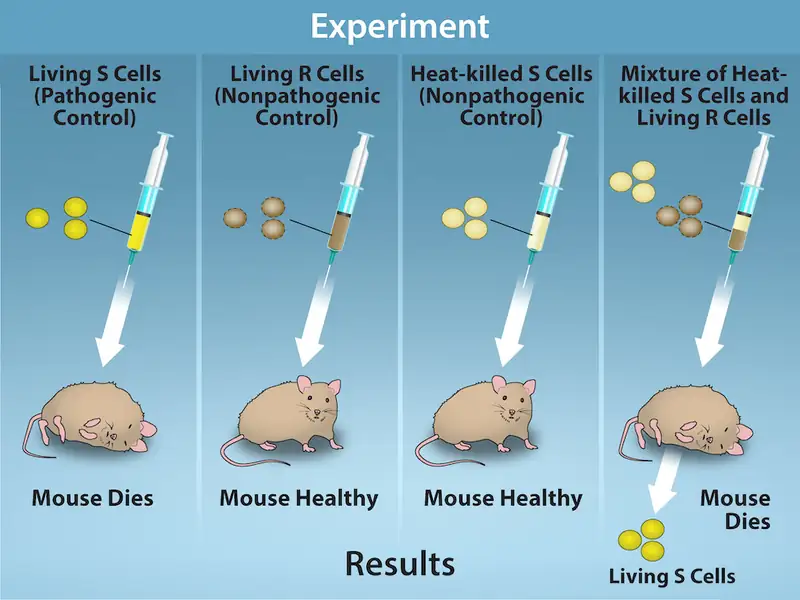
Scientists Oswald Avery, Colin MacLeod, and Maclyn McCarty (1944) were interested in exploring this transforming principle further. They isolated the S strain from the dead mice and isolated the proteins and nucleic acids (RNA and DNA) as these were possible candidates for the molecule of heredity. They used enzymes that specifically degraded each component and then used each mixture separately to transform the R strain. They found that when DNA was degraded, the resulting mixture was no longer able to transform the bacteria, whereas all of the other combinations were able to transform the bacteria. This led them to conclude that DNA was the transforming principle.
Career Connection: Forensic Scientist
Forensic Scientists used DNA analysis evidence for the first time to solve an immigration case. The story started with a teenage boy returning to London from Ghana to be with his mother. Immigration authorities at the airport were suspicious of him, thinking that he was traveling on a forged passport. After much persuasion, he was allowed to go live with his mother, but the immigration authorities did not drop the case against him. All types of evidence, including photographs, were provided to the authorities, but deportation proceedings were started nevertheless. Around the same time, Dr. Alec Jeffreys of Leicester University in the United Kingdom had invented a technique known as DNA fingerprinting. The immigration authorities approached Dr. Jeffreys for help. He took DNA samples from the mother and three of her children, as well as an unrelated mother, and compared the samples with the boy’s DNA. Because the biological father was not in the picture, DNA from the three children was compared with the boy’s DNA. He found a match in the boy’s DNA for both the mother and his three siblings. He concluded that the boy was indeed the mother’s son.
Forensic scientists analyze many items, including documents, handwriting, firearms, and biological samples. They analyze the DNA content of hair, semen, saliva, and blood, and compare it with a database of DNA profiles of known criminals. Analysis includes DNA isolation, sequencing, and sequence analysis. Forensic scientists are expected to appear at court hearings to present their findings. They are usually employed in crime labs of city and state government agencies. Geneticists experimenting with DNA techniques also work for scientific and research organizations, pharmaceutical industries, and college and university labs. Students wishing to pursue a career as a forensic scientist should have at least a bachelor's degree in chemistry, biology, or physics, and preferably some experience working in a laboratory.
Although the experiments of Avery, McCarty and McLeod had demonstrated that DNA was the informational component transferred during transformation, DNA was still considered to be too simple a molecule to carry biological information. Proteins, with their 20 different amino acids, were regarded as more likely candidates. The decisive experiment, conducted by Martha Chase and Alfred Hershey in 1952, provided confirmatory evidence that DNA was indeed the genetic material and not proteins. Chase and Hershey were studying a bacteriophage—a virus that infects bacteria. Viruses typically have a simple structure: a protein coat, called the capsid, and a nucleic acid core that contains the genetic material (either DNA or RNA). The bacteriophage infects the host bacterial cell by attaching to its surface, and then it injects its nucleic acids inside the cell. The phage DNA makes multiple copies of itself using the host machinery, and eventually the host cell bursts, releasing a large number of bacteriophages. Hershey and Chase selected radioactive elements that would specifically distinguish the protein from the DNA in infected cells. They labeled one batch of phage with radioactive sulfur, 35S, to label the protein coat. Another batch of phage were labeled with radioactive phosphorus, 32P. Because phosphorous is found in DNA, but not protein, the DNA and not the protein would be tagged with radioactive phosphorus. Likewise, sulfur is absent from DNA, but present in several amino acids such as methionine and cysteine.
Each batch of phage was allowed to infect the cells separately. After infection, the phage bacterial suspension was put in a blender, which caused the phage coat to detach from the host cell. Cells exposed long enough for infection to occur were then examined to see which of the two radioactive molecules had entered the cell. The phage and bacterial suspension was spun down in a centrifuge. The heavier bacterial cells settled down and formed a pellet, whereas the lighter phage particles stayed in the supernatant. In the tube that contained phage labeled with35S, the supernatant contained the radioactively labeled phage, whereas no radioactivity was detected in the pellet. In the tube that contained the phage labeled with 32P, the radioactivity was detected in the pellet that contained the heavier bacterial cells, and no radioactivity was detected in the supernatant. Hershey and Chase concluded that it was the phage DNA that was injected into the cell and carried information to produce more phage particles, thus providing evidence that DNA was the genetic material and not proteins (Figure 14.4).
![Illustration shows bacteria being infected by phage labeled with superscript 35 baseline upper case S, which is incorporated into the protein coat, or superscript 32 baseline upper case P, which is incorporated into the D N A. Infected bacteria were separated from phage by centrifugation and cultured. The bacteria that had been infected with phage containing superscript 32 baseline upper P labeled D N A made radioactive phage. The bacteria that had been infected with superscript 35 baseline upper S labeled phage produced unlabeled phage. The results support the hypothesis that D N A, and not protein, is the genetic material.](img/figure-14-01-03.webp)
Around this same time, Austrian biochemist Erwin Chargaff examined the content of DNA in different species and found that the amounts of adenine, thymine, guanine, and cytosine were not found in equal quantities, and that relative concentrations of the four nucleotide bases varied from species to species, but not within tissues of the same individual or between individuals of the same species. He also discovered something unexpected: That the amount of adenine equaled the amount of thymine, and the amount of cytosine equaled the amount of guanine (that is, A = T and G = C). Different species had equal amounts of purines (A+G) and pyrimidines (T + C), but different ratios of A+T to G+C. These observations became known as Chargaff’s rules. Chargaff's findings proved immensely useful when Watson and Crick were getting ready to propose their DNA double helix model! You can see after reading the past few pages how science builds upon previous discoveries, sometimes in a slow and laborious process.
14.2 DNA Structure and Sequencing¶
Learning Objectives
By the end of this section, you will be able to do the following:
- Describe the structure of DNA
- Explain the Sanger method of DNA sequencing
- Discuss the similarities and differences between eukaryotic and prokaryotic DNA
The building blocks of DNA are nucleotides. The important components of the nucleotide are a nitrogenous (nitrogen-bearing) base, a 5-carbon sugar (pentose), and a phosphate group (Figure 14.5). The nucleotide is named depending on the nitrogenous base. The nitrogenous base can be a purine such as adenine (A) and guanine (G), or a pyrimidine such as cytosine (C) and thymine (T).
Visual Connection
![llustration depicts the structure of a nucleoside, which is made up of a pentose with a nitrogenous base attached at the 1 prime position. There are two kinds of nitrogenous bases: pyrimidines, which have one six-membered ring, and purines, which have a six-membered ring fused to a five-membered ring. Cytosine, thymine, and uracil are pyrimidines, and adenine and guanine are purines. A nucleoside with one phosphate attached at the 5 prime position is called a nucleoside monophosphate. A nucleoside with two or three phosphates attached is called a nucleoside diphosphate or nucleoside triphosphate, respectively.](img/figure-14-02-01.webp)
The images above illustrate the five bases of DNA and RNA. Examine the images and explain why these are called “nitrogenous bases.” How are the purines different from the pyrimidines? How is one purine or pyrimidine different from another, e.g., adenine from guanine? How is a nucleoside different from a nucleotide?
The purines have a double ring structure with a six-membered ring fused to a five-membered ring. Pyrimidines are smaller in size; they have a single six-membered ring structure.
The sugar is deoxyribose in DNA and ribose in RNA. The carbon atoms of the five-carbon sugar are numbered 1', 2', 3', 4', and 5' (1' is read as “one prime”). The phosphate, which makes DNA and RNA acidic, is connected to the 5' carbon of the sugar by the formation of an ester linkage between phosphoric acid and the 5'-OH group (an ester is an acid + an alcohol). In DNA nucleotides, the 3' carbon of the sugar deoxyribose is attached to a hydroxyl (OH) group. In RNA nucleotides, the 2' carbon of the sugar ribose also contains a hydroxyl group. The base is attached to the 1'carbon of the sugar.
The nucleotides combine with each other to produce phosphodiester bonds. The phosphate residue attached to the 5' carbon of the sugar of one nucleotide forms a second ester linkage with the hydroxyl group of the 3' carbon of the sugar of the next nucleotide, thereby forming a 5'-3' phosphodiester bond. In a polynucleotide, one end of the chain has a free 5' phosphate, and the other end has a free 3'-OH. These are called the 5' and 3' ends of the chain. A base attached to a five-carbon sugar represents a nucleoside. A nucleotide is composed of one, two, or three phosphate groups attached to a nucleoside.
In the 1950s, Francis Crick and James Watson worked together to determine the structure of DNA at the University of Cambridge, England. Other scientists like Linus Pauling and Maurice Wilkins were also actively exploring this field. Pauling previously had discovered the secondary structure of proteins using X-ray crystallography. In Wilkins’ lab, researcher Rosalind Franklin was using X-ray diffraction methods to understand the structure of DNA. Watson and Crick were able to piece together the puzzle of the DNA molecule on the basis of Franklin's data because Crick had also studied X-ray diffraction (Figure 14.6). In 1962, James Watson, Francis Crick, and Maurice Wilkins were awarded the Nobel Prize in Medicine. Unfortunately, by then Franklin had died, and Nobel prizes are not awarded posthumously.
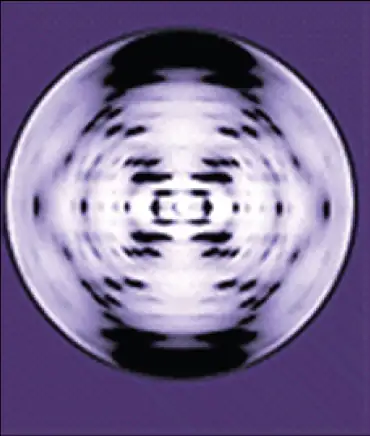
Watson and Crick proposed that DNA is made up of two strands that are twisted around each other to form a right-handed helix. Base pairing takes place between a purine and pyrimidine on opposite strands, so that A pairs with T, and G pairs with C (suggested by Chargaff's Rules). Thus, adenine and thymine are complementary base pairs, and cytosine and guanine are also complementary base pairs. The base pairs are stabilized by hydrogen bonds: adenine and thymine form two hydrogen bonds and cytosine and guanine form three hydrogen bonds. The two strands are anti-parallel in nature; that is, the 3' end of one strand faces the 5' end of the other strand. The sugar and phosphate of the nucleotides form the backbone of the structure, whereas the nitrogenous bases are stacked inside, like the rungs of a ladder. Each base pair is separated from the next base pair by a distance of 0.34 nm, and each turn of the helix measures 3.4 nm. Therefore, 10 base pairs are present per turn of the helix. The diameter of the DNA double-helix is 2 nm, and it is uniform throughout. Only the pairing between a purine and pyrimidine and the antiparallel orientation of the two DNA strands can explain the uniform diameter. The twisting of the two strands around each other results in the formation of uniformly spaced major and minor grooves (Figure 14.7).
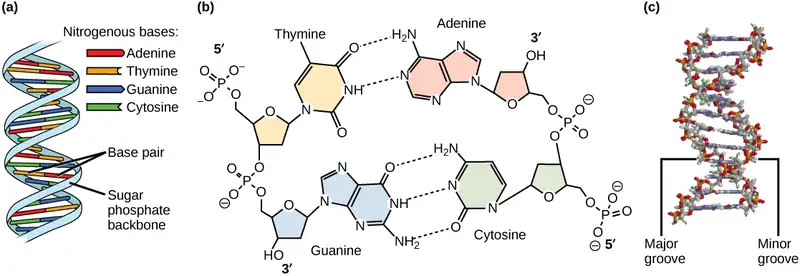
DNA Sequencing Techniques¶
Until the 1990s, the sequencing of DNA (reading the sequence of DNA) was a relatively expensive and long process. Using radiolabeled nucleotides also compounded the problem through safety concerns. With currently available technology and automated machines, the process is cheaper, safer, and can be completed in a matter of hours. Fred Sanger developed the sequencing method used for the human genome sequencing project, which is widely used today (Figure 14.8).
Interactive
Visit this site to watch a video explaining the DNA sequence-reading technique that resulted from Sanger’s work.
The sequencing method is known as the dideoxy chain termination method. The method is based on the use of chain terminators, the dideoxynucleotides (ddNTPs). The ddNTPs differ from the deoxynucleotides by the lack of a free 3' OH group on the five-carbon sugar. If a ddNTP is added to a growing DNA strand, the chain cannot be extended any further because the free 3' OH group needed to add another nucleotide is not available. By using a predetermined ratio of deoxynucleotides to dideoxynucleotides, it is possible to generate DNA fragments of different sizes.
![Part A shows a template D N A strand and newly synthesized strands that were generated in the presence of dideoxynucleotides that terminate the chain at different points to generate fragments of different sizes. Each dideoxynucleotide is labeled a different color. Part B shows a sequence readout that was generated after the D N A fragments were separated on the basis of size. The color of the fragment indicates the identity of the nucleotide at the end of a given fragment. By reading the colors in order, the D N A sequence can be determined.](img/figure-14-02-04ab-b7be.webp)
The DNA sample to be sequenced is denatured (separated into two strands by heating it to high temperatures). The DNA is divided into four tubes in which a primer, DNA polymerase, and all four nucleoside triphosphates (A, T, G, and C) are added. In addition, limited quantities of one of the four dideoxynucleoside triphosphates (ddCTP, ddATP, ddGTP, and ddTTP) are added to each tube respectively. The tubes are labeled as A, T, G, and C according to the ddNTP added. For detection purposes, each of the four dideoxynucleotides carries a different fluorescent label. Chain elongation continues until a fluorescent dideoxy nucleotide is incorporated, after which no further elongation takes place. After the reaction is over, electrophoresis is performed. Even a difference in length of a single base can be detected. The sequence is read from a laser scanner that detects the fluorescent marker of each fragment. For his work on DNA sequencing, Sanger received a Nobel Prize in Chemistry in 1980.
Interactive
Sanger’s genome sequencing has led to a race to sequence human genomes at rapid speed and low cost. Learn more by viewing the animation here.
Gel electrophoresis is a technique used to separate DNA fragments of different sizes. Usually the gel is made of a chemical called agarose (a polysaccharide polymer extracted from seaweed that is high in galactose residues). Agarose powder is added to a buffer and heated. After cooling, the gel solution is poured into a casting tray. Once the gel has solidified, the DNA is loaded on the gel and electric current is applied. The DNA has a net negative charge and moves from the negative electrode toward the positive electrode. The electric current is applied for sufficient time to let the DNA separate according to size; the smallest fragments will be farthest from the well (where the DNA was loaded), and the heavier molecular weight fragments will be closest to the well. Once the DNA is separated, the gel is stained with a DNA-specific dye for viewing it (Figure 14.9).
![The first photo shows an agarose gel illuminated under UV light. The gel is nine lanes across. Each lane was loaded with a sample containing DNA fragments of differing size that have separated as they travel through the gel, from top to bottom. The DNA appears as thin, white bands on a black background. Lanes one and nine contain many bands from a DNA standard. These bands are closely spaced toward the top, and spaced farther apart further down the gel. Lanes two through eight contain one or two bands each. Some of these bands are identical in size and run the same distance into the gel. Others run a slightly different distance, indicating a small difference in size. The second image shows a person using a handheld device with eight pipettes holding DNA material. The person places the device's pipettes directly over a prepared gel inside an electrphoresis machine. The gel already contains several lines of material where the user has previouly loaded DNA material.](img/figure-14-02-09.webp)
Evolution Connection: Neanderthal Genome: How Are We Related?
The first draft sequence of the Neanderthal genome was recently published by Richard E. Green et al. in 2010.1 Neanderthals are the closest ancestors of present-day humans. They were known to have lived in Europe and Western Asia (and now, perhaps, in Northern Africa) before they disappeared from fossil records approximately 30,000 years ago. Green’s team studied almost 40,000-year-old fossil remains that were selected from sites across the world. Extremely sophisticated means of sample preparation and DNA sequencing were employed because of the fragile nature of the bones and heavy microbial contamination. In their study, the scientists were able to sequence some four billion base pairs. The Neanderthal sequence was compared with that of present-day humans from across the world. After comparing the sequences, the researchers found that the Neanderthal genome had 2 to 3 percent greater similarity to people living outside Africa than to people in Africa. While current theories have suggested that all present-day humans can be traced to a small ancestral population in Africa, the data from the Neanderthal genome suggest some interbreeding between Neanderthals and early modern humans.
Green and his colleagues also discovered DNA segments among people in Europe and Asia that are more similar to Neanderthal sequences than to other contemporary human sequences. Another interesting observation was that Neanderthals are as closely related to people from Papua New Guinea as to those from China or France. This is surprising because Neanderthal fossil remains have been located only in Europe and West Asia. Most likely, genetic exchange took place between Neanderthals and modern humans as modern humans emerged out of Africa, before the divergence of Europeans, East Asians, and Papua New Guineans.
Several genes seem to have undergone changes from Neanderthals during the evolution of present-day humans. These genes are involved in cranial structure, metabolism, skin morphology, and cognitive development. One of the genes that is of particular interest is RUNX2, which is different in modern day humans and Neanderthals. This gene is responsible for the prominent frontal bone, bell-shaped rib cage, and dental differences seen in Neanderthals. It is speculated that an evolutionary change in RUNX2 was important in the origin of modern-day humans, and this affected the cranium and the upper body.
Interactive
Watch Svante Pääbo’s talk explaining the Neanderthal genome research at the 2011 annual TED (Technology, Entertainment, Design) conference.
DNA Packaging in Cells¶
Prokaryotes are much simpler than eukaryotes in many of their features (Figure 14.10). Most prokaryotes contain a single, circular chromosome that is found in an area of the cytoplasm called the nucleoid region.
Visual Connection
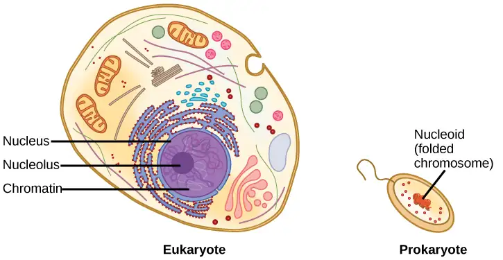
In eukaryotic cells, DNA and RNA synthesis occur in a separate compartment from protein synthesis. In prokaryotic cells, both processes occur together. What advantages might there be to separating the processes? What advantages might there be to having them occur together?
The size of the genome in one of the most well-studied prokaryotes, E.coli, is 4.6 million base pairs (approximately 1.1 mm, if cut and stretched out). So how does this fit inside a small bacterial cell? The DNA is twisted by what is known as supercoiling. Supercoiling suggests that DNA is either “under-wound” (less than one turn of the helix per 10 base pairs) or “over-wound” (more than 1 turn per 10 base pairs) from its normal relaxed state. Some proteins are known to be involved in the supercoiling; other proteins and enzymes such as DNA gyrase help in maintaining the supercoiled structure.
Eukaryotes, whose chromosomes each consist of a linear DNA molecule, employ a different type of packing strategy to fit their DNA inside the nucleus (Figure 14.11). At the most basic level, DNA is wrapped around proteins known as histones to form structures called nucleosomes. The histones are evolutionarily conserved proteins that are rich in basic amino acids and form an octamer composed of two molecules of each of four different histones. Their composition and properties are important to understanding gene expression, and were partially uncovered based on research by Marie M. Daly and Alfred E. Mirsky in the early 1950s. The DNA (remember, it is negatively charged because of the phosphate groups) is wrapped tightly around the histone core. This nucleosome is linked to the next one with the help of a linker DNA. This is also known as the “beads on a string” structure. With the help of a fifth histone, a string of nucleosomes is further compacted into a 30-nm fiber, which is the diameter of the structure. Metaphase chromosomes are even further condensed by association with scaffolding proteins. At the metaphase stage, the chromosomes are at their most compact, approximately 700 nm in width.
In interphase, eukaryotic chromosomes have two distinct regions that can be distinguished by staining. The tightly packaged region is known as heterochromatin, and the less dense region is known as euchromatin. Heterochromatin usually contains genes that are not expressed, and is found in the regions of the centromere and telomeres. The euchromatin usually contains genes that are transcribed, with DNA packaged around nucleosomes but not further compacted.
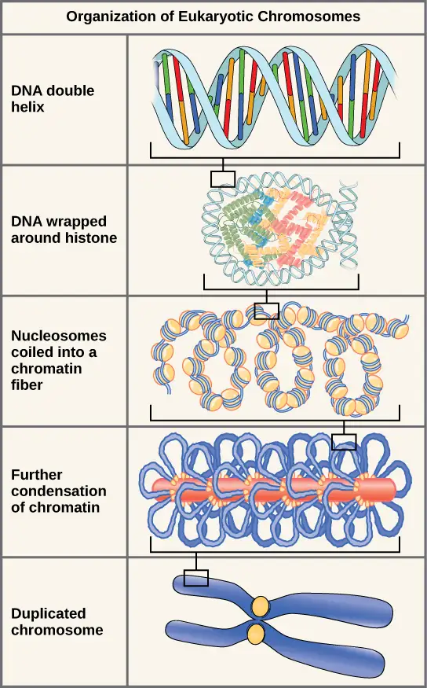
14.3 Basics of DNA Replication¶
Learning Objectives
By the end of this section, you will be able to do the following:
- Explain how the structure of DNA reveals the replication process
- Describe the Meselson and Stahl experiments
The elucidation of the structure of the double helix provided a hint as to how DNA divides and makes copies of itself. In their 1953 paper, Watson and Crick penned an incredible understatement: "It has not escaped our notice that the specific pairing we have postulated immediately suggests a possible copying mechanism for the genetic material." With specific base pairs, the sequence of one DNA strand can be predicted from its complement. The double-helix model suggests that the two strands of the double helix separate during replication, and each strand serves as a template from which the new complementary strand is copied. What was not clear was how the replication took place. There were three models suggested (Figure 14.12): conservative, semi-conservative, and dispersive.
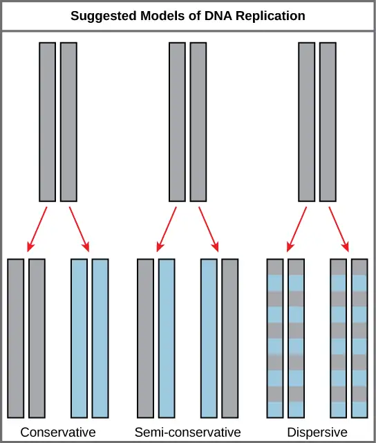
In conservative replication, the parental DNA remains together, and the newly formed daughter strands are together. The semi-conservative method suggests that each of the two parental DNA strands acts as a template for new DNA to be synthesized; after replication, each double-stranded DNA includes one parental or “old” strand and one “new” strand. In the dispersive model, both copies of DNA have double-stranded segments of parental DNA and newly synthesized DNA interspersed.
Meselson and Stahl were interested in understanding how DNA replicates. They grew E. coli for several generations in a medium containing a “heavy” isotope of nitrogen (15N), which gets incorporated into nitrogenous bases, and eventually into the DNA (Figure 14.13).
![Illustration shows an experiment in which E coli was grown initially in media containing superscript 15 baseline upper case N nucleotides. When the D N A was extracted and run in an ultracentrifuge, a band of D N A appeared low in the tube. The culture was next placed in the superscript 14 baseline upper case N medium. After one generation, all of the D N A appeared in the middle of the tube, indicating that the D N A was a mixture of half superscript 14 baseline upper N and half superscript 15 baseline upper N, D N A. After two generations, half of the D N A appeared in the middle of the tube, and half appeared higher up, indicating that half the D N A contained 50% superscript 15 baseline upper N, and half contained superscript 14 baseline upper N only. In subsequent generations, more and more of the D N A appeared in the upper, superscript 14 baseline upper N band.](img/figure-14-03-02.webp)
The E. coli culture was then placed into medium containing 14N and allowed to grow for several generations. After each of the first few generations, the cells were harvested and the DNA was isolated, then centrifuged at high speeds in an ultracentrifuge. During the centrifugation, the DNA was loaded into a gradient (typically a solution of salt such as cesium chloride or sucrose) and spun at high speeds of 50,000 to 60,000 rpm. Under these circumstances, the DNA will form a band according to its buoyant density: the density within the gradient at which it floats. DNA grown in 15N will form a band at a higher density position (i.e., farther down the centrifuge tube) than that grown in 14N. Meselson and Stahl noted that after one generation of growth in 14N after they had been shifted from 15N, the single band observed was intermediate in position in between DNA of cells grown exclusively in15N and 14N. This suggested either a semi-conservative or dispersive mode of replication. The DNA harvested from cells grown for two generations in 14N formed two bands: one DNA band was at the intermediate position between 15N and 14N, and the other corresponded to the band of 14N DNA. These results could only be explained if DNA replicates in a semi-conservative manner. And for this reason, therefore, the other two models were ruled out.
During DNA replication, each of the two strands that make up the double helix serves as a template from which new strands are copied. The new strands will be complementary to the parental or “old” strands. When two daughter DNA copies are formed, they have the same sequence and are divided equally into the two daughter cells.
Interactive
View this video on DNA replication.
14.4 DNA Replication in Prokaryotes¶
Learning Objectives
By the end of this section, you will be able to do the following:
- Explain the process of DNA replication in prokaryotes
- Discuss the role of different enzymes and proteins in supporting this process
DNA replication has been well studied in prokaryotes primarily because of the small size of the genome and because of the large variety of mutants that are available. E. coli has 4.6 million base pairs in a single circular chromosome and all of it gets replicated in approximately 42 minutes, starting from a single site along the chromosome and proceeding around the circle in both directions. This means that approximately 1000 nucleotides are added per second. Thus, the process is quite rapid and occurs without many mistakes.
DNA replication employs a large number of structural proteins and enzymes, each of which plays a critical role during the process. One of the key players is the enzyme DNA polymerase, also known as DNA pol, which adds nucleotides one-by-one to the growing DNA chain that is complementary to the template strand. The addition of nucleotides requires energy; this energy is obtained from the nucleoside triphosphates dATP, dGTP, dTTP and dCTP. Like ATP, the other NTPs (nucleoside triphosphates) are high-energy molecules that can serve both as the source of DNA nucleotides and the source of energy to drive the polymerization. When the bond between the phosphates is “broken,” the energy released is used to form the phosphodiester bond between the incoming nucleotide and the growing chain. In prokaryotes, three main types of polymerases are known: DNA pol I, DNA pol II, and DNA pol III. It is now known that DNA pol III is the enzyme required for DNA synthesis; DNA pol I is an important accessory enzyme in DNA replication, and along with DNA pol II, is primarily required for repair.
How does the replication machinery know where to begin? It turns out that there are specific nucleotide sequences called origins of replication where replication begins. In E. coli, which has a single origin of replication on its one chromosome (as do most prokaryotes), this origin of replication is approximately 245 base pairs long and is rich in AT sequences. The origin of replication is recognized by certain proteins that bind to this site. An enzyme called helicase unwinds the DNA by breaking the hydrogen bonds between the nitrogenous base pairs. ATP hydrolysis is required for this process. As the DNA opens up, Y-shaped structures called replication forks are formed. Two replication forks are formed at the origin of replication and these get extended bi-directionally as replication proceeds. Single-strand binding proteins coat the single strands of DNA near the replication fork to prevent the single-stranded DNA from winding back into a double helix.
DNA polymerase has two important restrictions: it is able to add nucleotides only in the 5' to 3' direction (a new DNA strand can be only extended in this direction). It also requires a free 3'-OH group to which it can add nucleotides by forming a phosphodiester bond between the 3'-OH end and the 5' phosphate of the next nucleotide. This essentially means that it cannot add nucleotides if a free 3'-OH group is not available. Then how does it add the first nucleotide? The problem is solved with the help of a primer that provides the free 3'-OH end. Another enzyme, RNA primase, synthesizes an RNA segment that is about five to ten nucleotides long and complementary to the template DNA. Because this sequence primes the DNA synthesis, it is appropriately called the primer. DNA polymerase can now extend this RNA primer, adding nucleotides one-by-one that are complementary to the template strand (Figure 14.14).
Visual Connection
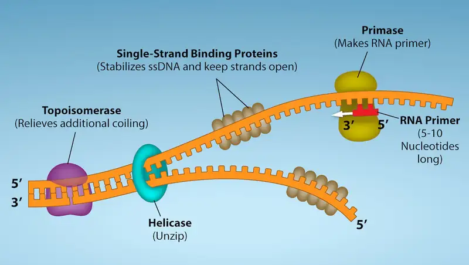
Question: You isolate a cell strain in which the joining of Okazaki fragments is impaired and suspect that a mutation has occurred in an enzyme found at the replication fork. Which enzyme is most likely to be mutated?
The replication fork moves at the rate of 1000 nucleotides per second. Topoisomerase prevents the over-winding of the DNA double helix ahead of the replication fork as the DNA is opening up; it does so by causing temporary nicks in the DNA helix and then resealing it. Because DNA polymerase can only extend in the 5' to 3' direction, and because the DNA double helix is antiparallel, there is a slight problem at the replication fork. The two template DNA strands have opposing orientations: one strand is in the 5' to 3' direction and the other is oriented in the 3' to 5' direction. Only one new DNA strand, the one that is complementary to the 3' to 5' parental DNA strand, can be synthesized continuously towards the replication fork. This continuously synthesized strand is known as the leading strand. The other strand, complementary to the 5' to 3' parental DNA, is extended away from the replication fork, in small fragments known as Okazaki fragments, each requiring a primer to start the synthesis. New primer segments are laid down in the direction of the replication fork, but each pointing away from it. (Okazaki fragments are named after the Japanese scientist who first discovered them. The strand with the Okazaki fragments is known as the lagging strand.)
The leading strand can be extended from a single primer, whereas the lagging strand needs a new primer for each of the short Okazaki fragments. The overall direction of the lagging strand will be 3' to 5', and that of the leading strand 5' to 3'. A protein called the sliding clamp holds the DNA polymerase in place as it continues to add nucleotides. The sliding clamp is a ring-shaped protein that binds to the DNA and holds the polymerase in place. As synthesis proceeds, the RNA primers are replaced by DNA. The primers are removed by the exonuclease activity of DNA pol I, which uses DNA behind the RNA as its own primer and fills in the gaps left by removal of the RNA nucleotides by the addition of DNA nucleotides. The nicks that remain between the newly synthesized DNA (that replaced the RNA primer) and the previously synthesized DNA are sealed by the enzyme DNA ligase, which catalyzes the formation of phosphodiester linkages between the 3'-OH end of one nucleotide and the 5' phosphate end of the other fragment.
Once the chromosome has been completely replicated, the two DNA copies move into two different cells during cell division.
The process of DNA replication can be summarized as follows:
- DNA unwinds at the origin of replication.
- Helicase opens up the DNA-forming replication forks; these are extended bidirectionally.
- Single-strand binding proteins coat the DNA around the replication fork to prevent rewinding of the DNA.
- Topoisomerase binds at the region ahead of the replication fork to prevent supercoiling.
- Primase synthesizes RNA primers complementary to the DNA strand.
- DNA polymerase III starts adding nucleotides to the 3'-OH end of the primer.
- Elongation of both the lagging and the leading strand continues.
- RNA primers are removed by exonuclease activity.
- Gaps are filled by DNA pol I by adding dNTPs.
- The gap between the two DNA fragments is sealed by DNA ligase, which helps in the formation of phosphodiester bonds.
Table 14.1 summarizes the enzymes involved in prokaryotic DNA replication and the functions of each.
Table 14.1
| Prokaryotic DNA Replication: Enzymes and Their Function | |
|---|---|
| Enzyme/protein | Specific Function |
| DNA pol I | Removes RNA primer and replaces it with newly synthesized DNA |
| DNA pol III | Main enzyme that adds nucleotides in the 5'-3' direction |
| Helicase | Opens the DNA helix by breaking hydrogen bonds between the nitrogenous bases |
| Ligase | Seals the gaps between the Okazaki fragments to create one continuous DNA strand |
| Primase | Synthesizes RNA primers needed to start replication |
| Sliding Clamp | Helps to hold the DNA polymerase in place when nucleotides are being added |
| Topoisomerase | Helps relieve the strain on DNA when unwinding by causing breaks, and then resealing the DNA |
| Single-strand binding proteins (SSB) | Binds to single-stranded DNA to prevent DNA from rewinding back. |
Interactive
Review the full process of DNA replication here.
14.5 DNA Replication in Eukaryotes¶
Learning Objectives
By the end of this section, you will be able to do the following:
- Discuss the similarities and differences between DNA replication in eukaryotes and prokaryotes
- State the role of telomerase in DNA replication
Eukaryotic genomes are much more complex and larger in size than prokaryotic genomes. Eukaryotes also have a number of different linear chromosomes. The human genome has 3 billion base pairs per haploid set of chromosomes, and 6 billion base pairs are replicated during the S phase of the cell cycle. There are multiple origins of replication on each eukaryotic chromosome; humans can have up to 100,000 origins of replication across the genome. The rate of replication is approximately 100 nucleotides per second, much slower than prokaryotic replication. In yeast, which is a eukaryote, special sequences known as autonomously replicating sequences (ARS) are found on the chromosomes. These are equivalent to the origin of replication in E. coli.
The number of DNA polymerases in eukaryotes is much more than in prokaryotes: 14 are known, of which five are known to have major roles during replication and have been well studied. They are known as pol α, pol β, pol γ, pol δ, and pol ε.
The essential steps of replication are the same as in prokaryotes. Before replication can start, the DNA has to be made available as a template. Eukaryotic DNA is bound to basic proteins known as histones to form structures called nucleosomes. Histones must be removed and then replaced during the replication process, which helps to account for the lower replication rate in eukaryotes. The chromatin (the complex between DNA and proteins) may undergo some chemical modifications, so that the DNA may be able to slide off the proteins or be accessible to the enzymes of the DNA replication machinery. At the origin of replication, a pre-replication complex is made with other initiator proteins. Helicase and other proteins are then recruited to start the replication process (Table 14.2).
Table 14.2
| Difference between Prokaryotic and Eukaryotic Replication | ||
|---|---|---|
| Property | Prokaryotes | Eukaryotes |
| Origin of replication | Single | Multiple |
| Rate of replication | 1000 nucleotides/s | 50 to 100 nucleotides/s |
| DNA polymerase types | 5 | 14 |
| Telomerase | Not present | Present |
| RNA primer removal | DNA pol I | RNase H |
| Strand elongation | DNA pol III | Pol α, pol δ, pol ε |
| Sliding clamp | Sliding clamp | PCNA |
A helicase using the energy from ATP hydrolysis opens up the DNA helix. Replication forks are formed at each replication origin as the DNA unwinds. The opening of the double helix causes over-winding, or supercoiling, in the DNA ahead of the replication fork. These are resolved with the action of topoisomerases. Primers are formed by the enzyme primase, and using the primer, DNA pol can start synthesis. Three major DNA polymerases are then involved: α, δ and ε. DNA pol α adds a short (20 to 30 nucleotides) DNA fragment to the RNA primer on both strands, and then hands off to a second polymerase. While the leading strand is continuously synthesized by the enzyme pol ε, the lagging strand is synthesized by pol δ. A sliding clamp protein known as PCNA (proliferating cell nuclear antigen) holds the DNA pol in place so that it does not slide off the DNA. As pol δ runs into the primer RNA on the lagging strand, it displaces it from the DNA template. The displaced primer RNA is then removed by RNase H (AKA flap endonuclease) and replaced with DNA nucleotides. The Okazaki fragments in the lagging strand are joined after the replacement of the RNA primers with DNA. The gaps that remain are sealed by DNA ligase, which forms the phosphodiester bond.
Telomere replication¶
Unlike prokaryotic chromosomes, eukaryotic chromosomes are linear. As you’ve learned, the enzyme DNA pol can add nucleotides only in the 5' to 3' direction. In the leading strand, synthesis continues until the end of the chromosome is reached. On the lagging strand, DNA is synthesized in short stretches, each of which is initiated by a separate primer. When the replication fork reaches the end of the linear chromosome, there is no way to replace the primer on the 5’ end of the lagging strand. The DNA at the ends of the chromosome thus remains unpaired, and over time these ends, called telomeres, may get progressively shorter as cells continue to divide.
Telomeres comprise repetitive sequences that code for no particular gene. In humans, a six-base-pair sequence, TTAGGG, is repeated 100 to 1000 times in the telomere regions. In a way, these telomeres protect the genes from getting deleted as cells continue to divide. The telomeres are added to the ends of chromosomes by a separate enzyme, telomerase (Figure 14.16), whose discovery helped in the understanding of how these repetitive chromosome ends are maintained. The telomerase enzyme contains a catalytic part and a built-in RNA template. It attaches to the end of the chromosome, and DNA nucleotides complementary to the RNA template are added on the 3' end of the DNA strand. Once the 3' end of the lagging strand template is sufficiently elongated, DNA polymerase can add the nucleotides complementary to the ends of the chromosomes. Thus, the ends of the chromosomes are replicated.
![The process of Telomere Replication is shown. The starting image has an unreplicated end, and is missing DNA on the lagging strang. Telomerase has an associated R N A that complements the 5 prime overhang at the end of the chromosome, creating an extension of the unreplicated end. The R N A template is used to synthesize the complementary strand, and telomerase again extends the unreplicated end. Telomerase then shifts, and the process is repeated. Next, primase and D N A polymerase synthesize the rest of the complementary strand. And the lagging strand is completed.](img/telomeres-x.webp)
Telomerase is typically active in germ cells and adult stem cells. It is not active in adult somatic cells. For their discovery of telomerase and its action, Elizabeth Blackburn, Carol W. Greider, and Jack W. Szostak (Figure 14.16) received the Nobel Prize for Medicine and Physiology in 2009. Later research using HeLa cells (obtained from Henrietta Lacks) confirmed that telomerase is present in human cells. And in 2001, researchers including Diane L. Wright found that telomerase is necessary for cells in human embryos to rapidly proliferate.
Telomerase and Aging¶
Cells that undergo cell division continue to have their telomeres shortened because most somatic cells do not make telomerase. This essentially means that telomere shortening is associated with aging. With the advent of modern medicine, preventative health care, and healthier lifestyles, the human life span has increased, and there is an increasing demand for people to look younger and have a better quality of life as they grow older.
In 2010, scientists found that telomerase can reverse some age-related conditions in mice. This may have potential in regenerative medicine.2 Telomerase-deficient mice were used in these studies; these mice have tissue atrophy, stem cell depletion, organ system failure, and impaired tissue injury responses. Telomerase reactivation in these mice caused extension of telomeres, reduced DNA damage, reversed neurodegeneration, and improved the function of the testes, spleen, and intestines. Thus, telomere reactivation may have potential for treating age-related diseases in humans.
Cancer is characterized by uncontrolled cell division of abnormal cells. The cells accumulate mutations, proliferate uncontrollably, and can migrate to different parts of the body through a process called metastasis. Scientists have observed that cancerous cells have considerably shortened telomeres and that telomerase is active in these cells. Interestingly, only after the telomeres were shortened in the cancer cells did the telomerase become active. If the action of telomerase in these cells can be inhibited by drugs during cancer therapy, then the cancerous cells could potentially be stopped from further division.
14.6 DNA Repair¶
Learning Objectives
By the end of this section, you will be able to do the following:
- Discuss the different types of mutations in DNA
- Explain DNA repair mechanisms
DNA replication is a highly accurate process, but mistakes can occasionally occur, such as a DNA polymerase inserting a wrong base. Uncorrected mistakes may sometimes lead to serious consequences, such as cancer. Repair mechanisms correct the mistakes. In rare cases, mistakes are not corrected, leading to mutations; in other cases, repair enzymes are themselves mutated or defective.
Most of the mistakes during DNA replication are promptly corrected by the proofreading ability of DNA polymerase itself. (Figure 14.17). In proofreading, the DNA pol reads the newly added base before adding the next one, so a correction can be made. The polymerase checks whether the newly added base has paired correctly with the base in the template strand. If it is the right base, the next nucleotide is added. If an incorrect base has been added, the enzyme makes a cut at the phosphodiester bond and releases the wrong nucleotide. This is performed by the 3' exonuclease action of DNA pol. Once the incorrect nucleotide has been removed, it can be replaced by the correct one.
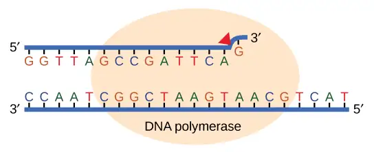
Some errors are not corrected during replication, but are instead corrected after replication is completed; this type of repair is known as mismatch repair (Figure 14.18). Specific repair enzymes recognize the mispaired nucleotide and excise part of the strand that contains it; the excised region is then resynthesized. If the mismatch remains uncorrected, it may lead to more permanent damage when the mismatched DNA is replicated. How do mismatch repair enzymes recognize which of the two bases is the incorrect one? In E. coli, after replication, the nitrogenous base adenine acquires a methyl group; the parental DNA strand will have methyl groups, whereas the newly synthesized strand lacks them. Thus, DNA polymerase is able to remove the wrongly incorporated bases from the newly synthesized, non-methylated strand. In eukaryotes, the mechanism is not very well understood, but it is believed to involve recognition of unsealed nicks in the new strand, as well as a short-term continuing association of some of the replication proteins with the new daughter strand after replication has completed.
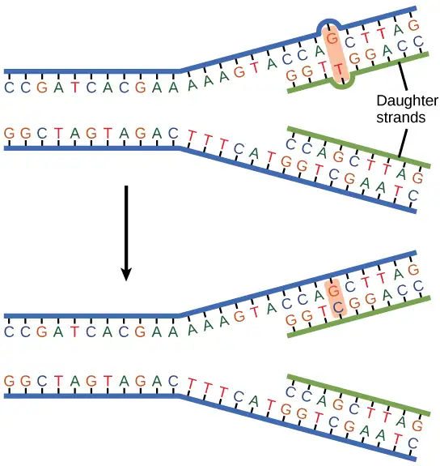
Another type of repair mechanism, nucleotide excision repair, is similar to mismatch repair, except that it is used to remove damaged bases rather than mismatched ones. The repair enzymes replace abnormal bases by making a cut on both the 3' and 5' ends of the damaged base (Figure 14.19). The segment of DNA is removed and replaced with the correctly paired nucleotides by the action of DNA pol. Once the bases are filled in, the remaining gap is sealed with a phosphodiester linkage catalyzed by DNA ligase. This repair mechanism is often employed when UV exposure causes the formation of pyrimidine dimers.
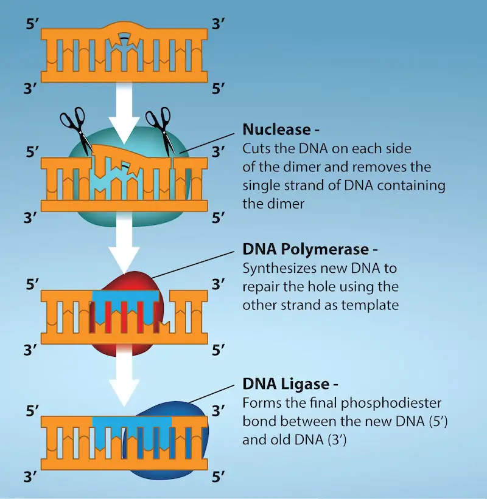
A well-studied example of mistakes not being corrected is seen in people suffering from xeroderma pigmentosa (Figure 14.20). Affected individuals have skin that is highly sensitive to UV rays from the sun. When individuals are exposed to UV light, pyrimidine dimers, especially those of thymine, are formed; people with xeroderma pigmentosa are not able to repair the damage. These are not repaired because of a defect in the nucleotide excision repair enzymes, whereas in normal individuals, the thymine dimers are excised and the defect is corrected. The thymine dimers distort the structure of the DNA double helix, and this may cause problems during DNA replication. People with xeroderma pigmentosa may have a higher risk of contracting skin cancer than those who don't have the condition.
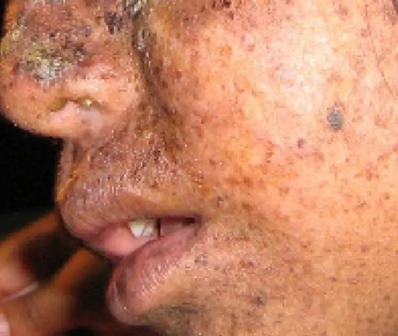
Errors during DNA replication are not the only reason why mutations arise in DNA. Mutations, variations in the nucleotide sequence of a genome, can also occur because of damage to DNA. Such mutations may be of two types: induced or spontaneous. Induced mutations are those that result from an exposure to chemicals, UV rays, x-rays, or some other environmental agent. For example, Charlotte Auerbach and J.M Robson discovered the mutation-inducing effects of mustard gas. Spontaneous mutations occur without any exposure to any environmental agent; they are a result of natural reactions taking place within the body.
Mutations may have a wide range of effects. Point mutations are those mutations that affect a single base pair. The most common nucleotide mutations are substitutions, in which one base is replaced by another. These substitutions can be of two types, either transitions or transversions. Transition substitution refers to a purine or pyrimidine being replaced by a base of the same kind; for example, a purine such as adenine may be replaced by the purine guanine. Transversion substitution refers to a purine being replaced by a pyrimidine, or vice versa; for example, cytosine, a pyrimidine, is replaced by adenine, a purine. Some point mutations are not detectable in the final product; these are known as silent mutations. Silent mutations are usually due to a substitution in the third base of a codon, which often represents the same amino acid as the original codon. Other point mutations can result in the replacement of one amino acid by another, which may alter the function of the protein. Point mutations that generate a stop codon can terminate a protein early.
Some mutations can result in an increased number of copies of the same codon. These are called trinucleotide repeat expansions and result in repeated regions of the same amino acid. Mutations can also be the result of the addition of a base, known as an insertion, or the removal of a base, also known as deletion. If an insertion or deletion results in the alteration of the translational reading frame (a frameshift mutation), the resultant protein is usually nonfunctional. Sometimes a piece of DNA from one chromosome may get translocated to another chromosome or to another region of the same chromosome; this is also known as translocation. These mutation types are shown in Figure 14.21.
Visual Connection
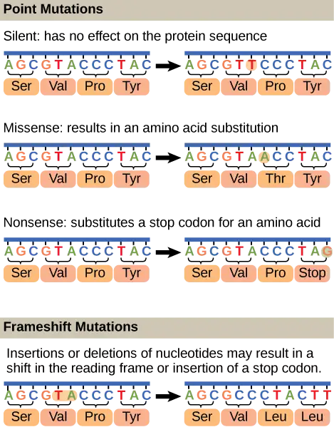
A frameshift mutation that results in the insertion of three nucleotides is often less deleterious than a mutation that results in the insertion of one nucleotide. Why?
Mutations in repair genes have been known to cause cancer. Many mutated repair genes have been implicated in certain forms of pancreatic cancer, colon cancer, and colorectal cancer. Mutations can affect either somatic cells or germ cells. If many mutations accumulate in a somatic cell, they may lead to problems such as the uncontrolled cell division observed in cancer. If a mutation takes place in germ cells, the mutation will be passed on to the next generation, as in the case of hemophilia and xeroderma pigmentosa.
Chapter Review¶
Key Terms¶
- electrophoresis
- technique used to separate DNA fragments according to size
- endonuclease
- enzymes that cleave the phosphodiester bond within a polynucleotide chain
- exonuclease
- enzymes that cleave nucleotides one at a time from the end of a polynucleotide chain
- helicase
- during replication, this enzyme helps to open up the DNA helix by breaking the hydrogen bonds
- induced mutation
- mutation that results from exposure to chemicals or environmental agents
- lagging strand
- during replication, the strand that is replicated in short fragments and away from the replication fork
- leading strand
- strand that is synthesized continuously in the 5'-3' direction, which is synthesized in the direction of the replication fork
- ligase
- enzyme that catalyzes the formation of a phosphodiester linkage between the 3' OH and 5' phosphate ends of the DNA
- mismatch repair
- type of repair mechanism in which mismatched bases are removed after replication
- mutation
- variation in the nucleotide sequence of a genome
- nucleotide excision repair
- type of DNA repair mechanism in which the wrong base, along with a few nucleotides upstream or downstream, are removed
- Okazaki fragment
- DNA fragment that is synthesized in short stretches on the lagging strand
- point mutation
- mutation that affects a single base
- primase
- enzyme that synthesizes the RNA primer; the primer is needed for DNA pol to start synthesis of a new DNA strand
- primer
- short stretch of nucleotides that is required to initiate replication; in the case of replication, the primer has RNA nucleotides
- proofreading
- function of DNA pol in which it reads the newly added base before adding the next one
- replication fork
- Y-shaped structure formed during initiation of replication
- silent mutation
- mutation that is not expressed
- single-strand binding protein
- during replication, protein that binds to the single-stranded DNA; this helps in keeping the two strands of DNA apart so that they may serve as templates
- sliding clamp
- ring-shaped protein that holds the DNA pol on the DNA strand
- spontaneous mutation
- mutation that takes place in the cells as a result of chemical reactions taking place naturally without exposure to any external agent
- telomerase
- enzyme that contains a catalytic part and an inbuilt RNA template; it functions to maintain telomeres at chromosome ends
- telomere
- DNA at the end of linear chromosomes
- topoisomerase
- enzyme that prevents overwinding of DNA when DNA replication is taking place
- transformation
- process in which external DNA is taken up by a cell
- transition substitution
- when a purine is replaced with a purine or a pyrimidine is replaced with another pyrimidine
- transversion substitution
- when a purine is replaced by a pyrimidine or a pyrimidine is replaced by a purine
Summary¶
14.1 Historical Basis of Modern Understanding¶
DNA was first isolated from white blood cells by Friedrich Miescher, who called it nuclein because it was isolated from nuclei. Frederick Griffith's experiments with strains of Streptococcus pneumoniae provided the first hint that DNA may be the transforming principle. Avery, MacLeod, and McCarty showed that DNA is required for the transformation of bacteria. Later experiments by Hershey and Chase using bacteriophage T2 proved that DNA is the genetic material. Chargaff found that the ratio of A = T and C = G, and that the percentage content of A, T, G, and C is different for different species.
14.2 DNA Structure and Sequencing¶
The currently accepted model of the double-helix structure of DNA was proposed by Watson and Crick. Some of the salient features are that the two strands that make up the double helix have complementary base sequences and anti-parallel orientations. Alternating deoxyribose sugars and phosphates form the backbone of the structure, and the nitrogenous bases are stacked like rungs inside. The diameter of the double helix, 2 nm, is uniform throughout. A purine always pairs with a pyrimidine; A pairs with T, and G pairs with C. One turn of the helix has 10 base pairs. Prokaryotes are much simpler than eukaryotes in many of their features. Most prokaryotes contain a single, circular chromosome. In general, eukaryotic chromosomes contain a linear DNA molecule packaged into nucleosomes, and have two distinct regions that can be distinguished by staining, reflecting different states of packaging and compaction.
14.3 Basics of DNA Replication¶
During cell division, each daughter cell receives a copy of each molecule of DNA by a process known as DNA replication. The single chromosome of a prokaryote or each chromosome of a eukaryote consists of a single continuous double helix. The model for DNA replication suggests that the two strands of the double helix separate during replication, and each strand serves as a template from which the new complementary strand is copied. In the conservative model of replication, the parental DNA is conserved, and the daughter DNA is newly synthesized. The semi-conservative model suggests that each of the two parental DNA strands acts as template for new DNA to be synthesized; after replication, each double-stranded DNA retains the parental or “old” strand and one “new” strand. The dispersive model suggested that the two copies of the DNA would have segments of parental DNA and newly synthesized DNA. The Meselson and Stahl experiment supported the semi-conservative model of replication, in which an entire replicated chromosome consists of one parental strand and one newly synthesized strand of DNA.
14.4 DNA Replication in Prokaryotes¶
Replication in prokaryotes starts from a sequence found on the chromosome called the origin of replication—the point at which the DNA opens up. Helicase opens up the DNA double helix, resulting in the formation of the replication fork. Single-strand binding proteins bind to the single-stranded DNA near the replication fork to keep the fork open. Primase synthesizes an RNA primer to initiate synthesis by DNA polymerase, which can add nucleotides only to the 3' end of a previously synthesized primer strand. Both new DNA strands grow according to their respective 5'-3' directions. One strand is synthesized continuously in the direction of the replication fork; this is called the leading strand. The other strand is synthesized in a direction away from the replication fork, in short stretches of DNA known as Okazaki fragments. This strand is known as the lagging strand. Once replication is completed, the RNA primers are replaced by DNA nucleotides and the DNA is sealed with DNA ligase, which creates phosphodiester bonds between the 3'-OH of one end and the 5' phosphate of the other strand.
14.5 DNA Replication in Eukaryotes¶
Replication in eukaryotes starts at multiple origins of replication. The mechanism is quite similar to that in prokaryotes. A primer is required to initiate synthesis, which is then extended by DNA polymerase as it adds nucleotides one by one to the growing chain. The leading strand is synthesized continuously, whereas the lagging strand is synthesized in short stretches called Okazaki fragments. The RNA primers are replaced with DNA nucleotides; the DNA Okazaki fragments are linked into one continuous strand by DNA ligase. The ends of the chromosomes pose a problem as the primer RNA at the 5’ ends of the DNA cannot be replaced with DNA, and the chromosome is progressively shortened. Telomerase, an enzyme with an inbuilt RNA template, extends the ends by copying the RNA template and extending one strand of the chromosome. DNA polymerase can then fill in the complementary DNA strand using the regular replication enzymes. In this way, the ends of the chromosomes are protected.
14.6 DNA Repair¶
DNA polymerase can make mistakes while adding nucleotides. It edits the DNA by proofreading every newly added base. Incorrect bases are removed and replaced by the correct base before proceeding with elongation. Most mistakes are corrected during replication, although when this does not happen, the mismatch repair mechanism is employed. Mismatch repair enzymes recognize the wrongly incorporated base and excise it from the DNA, replacing it with the correct base. In yet another type of repair, nucleotide excision repair, a damaged base is removed along with a few bases on the 5' and 3' end, and these are replaced by copying the template with the help of DNA polymerase. The ends of the newly synthesized fragment are attached to the rest of the DNA using DNA ligase, which creates a phosphodiester bond.
Most mistakes are corrected, and if they are not, they may result in a mutation, defined as a permanent change in the DNA sequence. Mutations can be of many types, such as substitution, deletion, insertion, and trinucleotide repeat expansions. Mutations in repair genes may lead to serious consequences such as cancer. Mutations can be induced or may occur spontaneously.
Review Questions¶
14.1 Historical Basis of Modern Understanding¶
1. If DNA of a particular species was analyzed and it was found that it contains 27 percent A, what would be the percentage of C?
- 27 percent
- 30 percent
- 23 percent
- 54 percent
Answer
C
2. The experiments by Hershey and Chase helped confirm that DNA was the hereditary material on the basis of the finding that:
- radioactive phage were found in the pellet
- radioactive cells were found in the supernatant
- radioactive sulfur was found inside the cell
- radioactive phosphorus was found in the cell
Answer
D
3. Bacterial transformation is a major concern in many medical settings. Why might health care providers be concerned?
- Pathogenic bacteria could introduce disease-causing genes in non-pathogenic bacteria.
- Antibiotic resistance genes could be introduced to new bacteria to create “superbugs.”
- Bacteriophages could spread DNA encoding toxins to new bacteria.
- All of the above.
Answer
D
14.2 DNA Structure and Sequencing¶
4. DNA double helix does not have which of the following?
- antiparallel configuration
- complementary base pairing
- major and minor grooves
- uracil
Answer
D
5. In eukaryotes, what is the DNA wrapped around?
- single-stranded binding proteins
- sliding clamp
- polymerase
- histones
Answer
D
14.3 Basics of DNA Replication¶
6. Meselson and Stahl's experiments proved that DNA replicates by which mode?
- conservative
- semi-conservative
- dispersive
- none of the above
Answer
B
7. If the sequence of the 5'-3' strand is AATGCTAC, then the complementary sequence has the following sequence:
- 3'-AATGCTAC-5'
- 3'-CATCGTAA-5'
- 3'-TTACGATG-5'
- 3'-GTAGCATT-5'
Answer
C
8. How did Meselson and Stahl support Watson and Crick’s double-helix model?
- They demonstrated that each strand serves as a template for synthesizing a new strand of DNA.
- They showed that the DNA strands break and recombine without losing genetic material.
- They proved that DNA maintains a double-helix structure while undergoing semi-conservative replication.
- They demonstrated that conservative replication maintains the complementary base pairing of each DNA helix.
Answer
A
14.4 DNA Replication in Prokaryotes¶
9. Which of the following components is not involved during the formation of the replication fork?
- single-strand binding proteins
- helicase
- origin of replication
- ligase
Answer
D
10. Which of the following does the enzyme primase synthesize?
- DNA primer
- RNA primer
- Okazaki fragments
- phosphodiester linkage
Answer
B
11. In which direction does DNA replication take place?
- 5'-3'
- 3'-5'
- 5'
- 3'
Answer
A
12. A scientist randomly mutates the DNA of a bacterium. She then sequences the bacterium’s daughter cells, and finds that the daughters have many errors in their replicated DNA. The parent bacterium likely acquired a mutation in which enzyme?
- DNA ligase
- DNA pol II
- Primase
- DNA pol I
Answer
B
14.5 DNA Replication in Eukaryotes¶
13. The ends of the linear chromosomes are maintained by
- helicase
- primase
- DNA pol
- telomerase
Answer
D
14. Which of the following is not a true statement comparing prokaryotic and eukaryotic DNA replication?
- Both eukaryotic and prokaryotic DNA polymerases build off RNA primers made by primase.
- Eukaryotic DNA replication requires multiple replication forks, while prokaryotic replication uses a single origin to rapidly replicate the entire genome.
- DNA replication always occurs in the nucleus.
- Eukaryotic DNA replication involves more polymerases than prokaryotic replication.
Answer
C
14.6 DNA Repair¶
15. During proofreading, which of the following enzymes reads the DNA?
- primase
- topoisomerase
- DNA polymerase
- helicase
Answer
C
16. The initial mechanism for repairing nucleotide errors in DNA is ________.
- mismatch repair
- DNA polymerase proofreading
- nucleotide excision repair
- thymine dimers
Answer
B
17. A scientist creates fruit fly larvae with a mutation that eliminates the exonuclease function of DNA pol. Which prediction about the mutational load in the adult fruit flies is most likely to be correct?
- The adults with the DNA pol mutation will have significantly more mutations than average.
- The adults with the DNA pol mutation will have slightly more mutations than average.
- The adults with the DNA pol mutation will have the same number of mutations as average.
- The adults with the DNA pol mutation will have fewer mutations than average.
Answer
B
Critical Thinking Questions¶
14.1 Historical Basis of Modern Understanding¶
18. Explain Griffith's transformation experiments. What did he conclude from them?
Answer
Live R cells acquired genetic information from the heat-killed S cells that “transformed” the R cells into S cells.
19. Why were radioactive sulfur and phosphorous used to label bacteriophage in Hershey and Chase's experiments?
Answer
Sulfur is an element found in proteins and phosphorus is a component of nucleic acids.
20. When Chargaff was performing his experiments, the tetranucleotide hypothesis, which stated that DNA was composed of GACT nucleotide repeats, was the most widely accepted view of DNA’s composition. How did Chargaff disprove this hypothesis?
Answer
If the tetranucleotide hypothesis were true, then DNA would have to contain equal amounts of all four nucleotides (A=T=G=C). However, Chargaff demonstrated that A=T and G=C, but that the four nucleotides are not present in equal amounts.
14.2 DNA Structure and Sequencing¶
21. Provide a brief summary of the Sanger sequencing method.
Answer
The template DNA strand is mixed with a DNA polymerase, a primer, the 4 deoxynucleotides, and a limiting concentration of 4 dideoxynucleotides. DNA polymerase synthesizes a strand complementary to the template. Incorporation of ddNTPs at different locations results in DNA fragments that have terminated at every possible base in the template. These fragments are separated by gel electrophoresis and visualized by a laser detector to determine the sequence of bases.
22. Describe the structure and complementary base pairing of DNA.
Answer
DNA has two strands in anti-parallel orientation. The sugar-phosphate linkages form a backbone on the outside, and the bases are paired on the inside: A with T, and G with C, like rungs on a spiral ladder.
23. Prokaryotes have a single circular chromosome while eukaryotes have linear chromosomes. Describe one advantage and one disadvantage to the eukaryotic genome packaging compared to the prokaryotes.
Answer
Advantage: The linear arrangement of the eukaryotic chromosome allows more DNA to be packed by tightly winding it around histones. More genetic material means that the organism can encode more information into a single cell. This eventually allowed some eukaryotes to develop into multicellular organisms with cell specialization. Disadvantage: Maintaining more genetic material requires more energy, and introduces the possibility for more errors (more complexity).
14.3 Basics of DNA Replication¶
24. How did the scientific community learn that DNA replication takes place in a semi-conservative fashion?
Answer
Meselson’s experiments with E. coli grown in 15N deduced this finding.
25. Imagine the Meselson and Stahl experiments had supported conservative replication instead of semi-conservative replication. What results would you predict to observe after two rounds of replication? Be specific regarding percent distributions of DNA incorporating 15N and 14N in the gradient.
Answer
Following two rounds of conservative replication, two bands would be detected after ultracentrifugation. A lower (heavier) band would be at the 15N density, and would comprise 25% of the total DNA. A second, higher (lighter) band would be at the 14N density, and would contain 75% of the total DNA.
14.4 DNA Replication in Prokaryotes¶
26. DNA replication is bidirectional and discontinuous; explain your understanding of those concepts.
Answer
At an origin of replication, two replication forks are formed that are extended in two directions. On the lagging strand, Okazaki fragments are formed in a discontinuous manner.
27. What are Okazaki fragments and how they are formed?
Answer
Short DNA fragments are formed on the lagging strand synthesized in a direction away from the replication fork. These are synthesized by DNA pol.
28. If the rate of replication in a particular prokaryote is 900 nucleotides per second, how long would it take 1.2 million base pair genomes to make two copies?
Answer
1333 seconds or 22.2 minutes.
29. Explain the events taking place at the replication fork. If the gene for helicase is mutated, what part of replication will be affected?
Answer
At the replication fork, the events taking place are helicase action, binding of single-strand binding proteins, primer synthesis, and synthesis of new strands. If there is a mutated helicase gene, the replication fork will not be extended.
30. What is the role of a primer in DNA replication? What would happen if you forgot to add a primer in a tube containing the reaction mix for a DNA sequencing reaction?
Answer
Primer provides a 3'-OH group for DNA pol to start adding nucleotides. There would be no reaction in the tube without a primer, and no bands would be visible on the electrophoresis.
31. Quinolone antibiotics treat bacterial infections by blocking the activity of topoisomerase. Why does this treatment work? Explain what occurs at the molecular level.
Answer
Bacteria treated with quinolones will no longer be able to replicate their DNA. Topoisomerase relieves the excess DNA supercoiling that occurs ahead of the replication fork as DNA is unwound for replication. If topoisomerase is inhibited, DNA helicase will only be able to unwind the DNA for a short stretch before the supercoiling becomes too overwound for replication to continue.
14.5 DNA Replication in Eukaryotes¶
32. How do the linear chromosomes in eukaryotes ensure that its ends are replicated completely?
Answer
Telomerase has an inbuilt RNA template that extends the 3' end, so primer is synthesized and extended. Thus, the ends are protected.
14.6 DNA Repair¶
33. What is the consequence of mutation of a mismatch repair enzyme? How will this affect the function of a gene?
Answer
Mutations are not repaired, as in the case of xeroderma pigmentosa. Gene function may be affected or it may not be expressed.
34. An adult with a history of tanning has his genome sequenced. The beginning of a protein-coding region of his DNA reads ATGGGGATATGGCAT. If the protein-coding region of a healthy adult reads ATGGGGATATGAGCAT, identify the site and type of mutation.
Answer
This is a frameshift mutation with a deletion of an “A” in the 12th position of the coding region.
Patient: ATGGGGATATGGCAT
Normal: ATGGGGATATGAGCAT
Visual Connection Questions¶
14.2 DNA Structure and Sequencing¶
35. Figure 14.10 In eukaryotic cells, DNA and RNA synthesis occur in a separate compartment from protein synthesis. In prokaryotic cells, both processes occur together. What advantages might there be to separating the processes? What advantages might there be to having them occur together?
Answer
Figure 14.10 Compartmentalization enables a eukaryotic cell to divide processes into discrete steps so it can build more complex protein and RNA products. But there is an advantage to having a single compartment as well: RNA and protein synthesis occurs much more quickly in a prokaryotic cell.
14.4 DNA Replication in Prokaryotes¶
36. Figure 14.14 You isolate a cell strain in which the joining of Okazaki fragments is impaired and suspect that a mutation has occurred in an enzyme found at the replication fork. Which enzyme is most likely to be mutated?
Answer
Figure 14.14 DNA ligase, as this enzyme joins together Okazaki fragments.
14.6 DNA Repair¶
37. Figure 14.21 A frameshift mutation that results in the insertion of three nucleotides is often less deleterious than a mutation that results in the insertion of one nucleotide. Why?
Answer
Figure 14.21 If three nucleotides are added, one additional amino acid will be incorporated into the protein chain, but the reading frame wont shift.
Adapted from Biology 2e by OpenStax, licensed under CC BY 4.0. Access the original for free at openstax.org. Changes: converted to the web reading format of The Open Book Project.